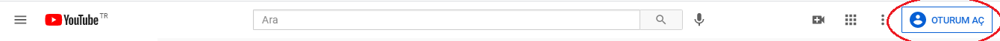
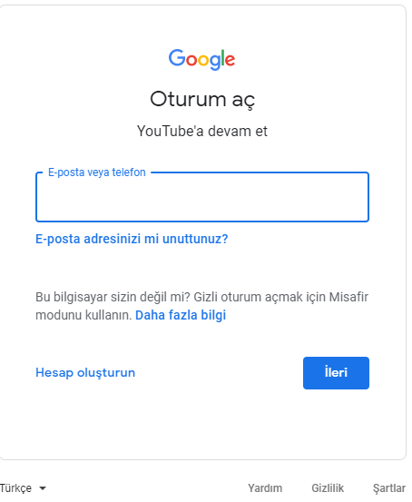
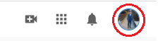
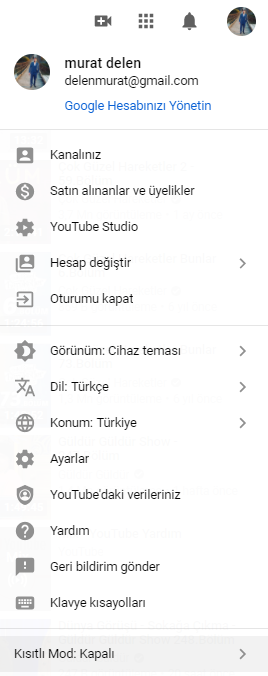
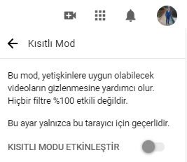
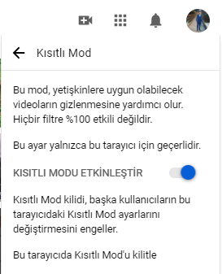

Bilgiye daima aç, meraklı, yaratıcı ve yetenekli çocuklar mı yetiştirmek istiyorsunuz? İstek sadece bununla kalsa iyi, birde bunların yanında internet ve yanında teknoloji denilen terimlerden gerçekten faydalansın… İnternet, sonu olmayan içeriklere ve etkilere sahip sınırsız bir dünya. Çok fazla insan var. Ve bir o kadar da yetenek! Beraberinde gelen birçok güzel yer, teori ve fikir var. Tüm bu bilgiler, kelimenin tam anlamıyla parmaklarımızın ucunda. Birkaç tıklamayla dünyanın öbür ucundaki yerleri keşfedebilir, yeni kavramlar öğrenebiliriz. Bu gerçekten muazzam bir şey. Örnek olarak YouTube’ u ele alabiliriz. Evet, milyonlarca YouTube kanalı var ve bunların büyük bir kısmı oldukça değersiz. Bu nedenle de bu platformu özenle inceleme ve çocuklarımız için kullanabileceğimiz kanalları listeledik. İşte listemiz…
Çocuklar için Youtube kanallarına güvenli erişim adımları:
Hepimiz bir YouTube kanalına erişimin adımlarını biliriz, peki YouTube içeriklerinin çocuklarınız için kısıtlanabileceğini biliyor musunuz işte işlem adımları:
Hadi Başlayalım
-
Sağ üst köşedeki oturum aç kısmına tıklayınız.

-
Sağ üst köşedeki oturum aç kısmına tıklayınız.

-
Sağ üst köşedeki oturum aç kısmına tıklayınız.

-
Sağ üst köşedeki oturum aç kısmına tıklayınız.

-
Sağ üst köşedeki oturum aç kısmına tıklayınız.

-
Sağ üst köşedeki oturum aç kısmına tıklayınız.
Sağ üst köşedeki oturum aç kısmına tıklayınız.



Çoçuklar için youtube kanalları:
Z kuşağı ile baş başa kalan biz X ve Y kuşakları. Çocuklarımızı teknolojiden uzak tutamayız ama iyi teknolojileri seçme yeteneği kazandırabiliriz. Bunu onlara izlettiğimiz ve dinlettiğimiz şeylerle yapabilmek mümkün. Hem dinleme hem de izleme olanaklarını içinde barındıran ve her ne kadar bir teknoloji olmasa da çocuklarımız için vaz geçilmez bir kaynak YouTube. Bu kaynakta meraklı ve şanslı z kuşağımız için faydalı kanallar da var. İşte bunlardan birkaçı.
Lezzetli Robot Tarifleri
İsminden de anlaşılacağı üzere bu kanal çocuklara robot yapmayı öğretiyor. Kanalın genel teması elektronik, kodlama ve robotik üzerine. Çocuğa basit malzemeler ile nasıl robot yapılacağını gösteren bu kanal çocuğun yaratıcılığını geliştiriyor. Ayrıca çocuklar okulda öğrendiği fizik bilgisini uygulamaya koyarak daha iyi öğreniyor. Çocuk bu yolla hobi kazanabilir ve bilim üzerine çalışmak isteyebilir. Bu kanal daha çok 13 yaş ve üzeri çocuklar için uygun.
Homur ve Gomur
Bu kanal Türk yapımı sevimli oyuncakların öykülerini anlatıyor. Kanalın içerikleri 4 yaş ve üzeri için uygun. Hikayelerden çocuklar işbirliği ve yardımseverlik gibi önemli kavramları öğrenebilir.
Robotistan
Robotistan kodlama ve robotik ile ilgili içerikler hazırlayan bir kanal. Bu kanal 2 yaş ve üzeri olan çocuklar için uygun. Kanalın içerikleri eğitici ve çocuklar bilimi sevdirebilir. Ayrıca çocuklara yaratıcılık kazandırır ve bir hobi edinebilirler. Sadece çocuklar değil ebeveynlerde bu kanaldan verim alabilirler.
Ruhun Doysun
İsrafın fazla olduğu günümüzde bu kanal yemek israfını ve fazla tüketimin azaltılmasına yöneliktir. Bu konu ile ilgili şimdiden bilinçlendirilen çocuklar büyüdükleri zaman gereksiz ve fazla tüketimden uzak durabilirler. 13 yaş ve üzeri için uygun olan bu kanal başka kültürleri öğrenme, genel kültür ve çevrecilik gibi önemli kavramları çocuklara kazandırabilir.
Afacan TV
Çocuklar için öğretici müzik videoları üreten bir kanal. 3 yaş ve üzeri için uygun olan kanal çocukları dil öğrenimine katkıda bulunuyor. Özellikle okul öncesi çocukların dil öğrenimine katkıda bulunabilir.
NatGeo Kids
Profesyonellikten ödün vermeyen ve oldukça çeşitli içeriklere sahip olan NatGeo Kids, hayat bilgisinden biyolojiye; kimyadan fiziğe ve mühendisliğe kadar birçok konuda eğitici ve ilgi çekici videolar sunuyor. Tüm yaş grupları için uygun.
patrickJMT
YouTube'da on yıldır matematik videoları üretiyor. Zor kavramların kolayca anlaşılabilecek şekilde anlatıldığı videolar için bu kanal doğru adres. Tüm yaş grupları için uygun.
Nancy Pi
Matematik uzmanı Nancy Pi, kız çocuklarımız için müthiş bir rol model. Kendisi MIT mezunu ve zor kavramları açıklıyor. Ortaokula giden ve daha büyük çocuklar için uygun.
Khan Academy
Her zaman desteğine başvurabileceğiniz bir kanal Khan Academy. Ücretsiz, kapsamlı ve eğitim dünyasına hediye niteliği taşıyan içeriklere sahip bir kanal. Tüm yaş grupları için uygun.
Art for Kids Hub
Sanatla uğraşmayı seven çocuklara yönelik içerikler hazırlayan bir aile kanalı. Temel çizim derslerinden daha zor konulara kadar çeşitli videolar paylaşan kanal, küçük sanatçılar için harika. İlkokul öğrencileri için uygun.
The ArtChik
Sanatçı Andrea Kirk, tüm seviyelere ve yaşlara hitap eden resim dersleri veriyor.
Z kuşağı ile baş başa kalan biz X ve Y kuşakları. Çocuklarımızı teknolojiden uzak tutamayız ama iyi teknolojileri seçme yeteneği kazandırabiliriz. Bunu onlara izlettiğimiz ve dinlettiğimiz şeylerle yapabilmek mümkün. Hem dinleme hem de izleme olanaklarını içinde barındıran ve her ne kadar bir teknoloji olmasa da çocuklarımız için vaz geçilmez bir kaynak YouTube. Bu kaynakta meraklı ve şanslı z kuşağımız için faydalı kanallar da var. İşte bunlardan birkaçı.
Çoçuklar için youtube kanalları:
- Lezzetli Robot Tarifleri:
İsminden de anlaşılacağı üzere bu kanal çocuklara robot yapmayı öğretiyor. Kanalın genel teması elektronik, kodlama ve robotik üzerine. Çocuğa basit malzemeler ile nasıl robot yapılacağını gösteren bu kanal çocuğun yaratıcılığını geliştiriyor. Ayrıca çocuklar okulda öğrendiği fizik bilgisini uygulamaya koyarak daha iyi öğreniyor. Çocuk bu yolla hobi kazanabilir ve bilim üzerine çalışmak isteyebilir. Bu kanal daha çok 13 yaş ve üzeri çocuklar için uygun.
- Homur ve Gomur:
Bu kanal Türk yapımı sevimli oyuncakların öykülerini anlatıyor. Kanalın içerikleri 4 yaş ve üzeri için uygun. Hikayelerden çocuklar işbirliği ve yardımseverlik gibi önemli kavramları öğrenebilir.
- Robotistan:
Robotistan kodlama ve robotik ile ilgili içerikler hazırlayan bir kanal. Bu kanal 2 yaş ve üzeri olan çocuklar için uygun. Kanalın içerikleri eğitici ve çocuklar bilimi sevdirebilir. Ayrıca çocuklara yaratıcılık kazandırır ve bir hobi edinebilirler. Sadece çocuklar değil ebeveynlerde bu kanaldan verim alabilirler.
- Ruhun Doysun:
İsrafın fazla olduğu günümüzde bu kanal yemek israfını ve fazla tüketimin azaltılmasına yöneliktir. Bu konu ile ilgili şimdiden bilinçlendirilen çocuklar büyüdükleri zaman gereksiz ve fazla tüketimden uzak durabilirler. 13 yaş ve üzeri için uygun olan bu kanal başka kültürleri öğrenme, genel kültür ve çevrecilik gibi önemli kavramları çocuklara kazandırabilir.
- Afacan TV:
Çocuklar için öğretici müzik videoları üreten bir kanal. 3 yaş ve üzeri için uygun olan kanal çocukları dil öğrenimine katkıda bulunuyor. Özellikle okul öncesi çocukların dil öğrenimine katkıda bulunabilir.
- NatGeo Kids
Profesyonellikten ödün vermeyen ve oldukça çeşitli içeriklere sahip olan NatGeo Kids, hayat bilgisinden biyolojiye; kimyadan fiziğe ve mühendisliğe kadar birçok konuda eğitici ve ilgi çekici videolar sunuyor. Tüm yaş grupları için uygun.
- patrickJMT:
YouTube'da on yıldır matematik videoları üretiyor. Zor kavramların kolayca anlaşılabilecek şekilde anlatıldığı videolar için bu kanal doğru adres. Tüm yaş grupları için uygun.
- Nancy Pi:
Matematik uzmanı Nancy Pi, kız çocuklarımız için müthiş bir rol model. Kendisi MIT mezunu ve zor kavramları açıklıyor. Ortaokula giden ve daha büyük çocuklar için uygun.
- Khan Academy:
Her zaman desteğine başvurabileceğiniz bir kanal Khan Academy. Ücretsiz, kapsamlı ve eğitim dünyasına hediye niteliği taşıyan içeriklere sahip bir kanal. Tüm yaş grupları için uygun.
- Art for Kids Hub:
Sanatla uğraşmayı seven çocuklara yönelik içerikler hazırlayan bir aile kanalı. Temel çizim derslerinden daha zor konulara kadar çeşitli videolar paylaşan kanal, küçük sanatçılar için harika. İlkokul öğrencileri için uygun.
- The ArtChik:
Sanatçı Andrea Kirk, tüm seviyelere ve yaşlara hitap eden resim dersleri veriyor.
Video ve Resimler eklenecek
Etkileşim alanı